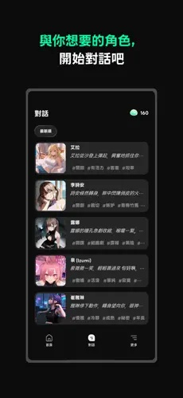
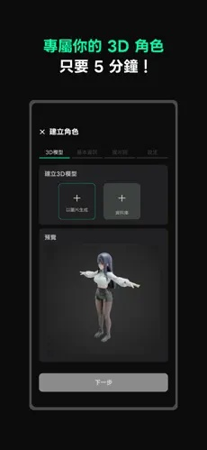

把 Larc 嵌进我每周的 AI 角色测评流水线
作为一个每周要体验 5 个新 AI 角色、产出对比测评的写作者，我是怎么把 Larc 接进现有工作流，让选角色、截图、同步、整理这一整条链跑起来的。
我的 AI 角色测评流水线，以前卡在哪
我每周要做五篇 AI 角色体验的短评，发在自己的公众号和知乎专栏。以前的流程是：在应用里刷到感兴趣的角色 → 聊上十分钟 → 手动截图 → 从手机传到电脑 → 整理到 Notion 里 → 写稿。五个角色轮一遍，光截图和传文件就要花掉四十多分钟——而且经常聊到一半手机没电，换电脑登不上同一个账号，之前的对话记录全丢。
去年换了新手机，翻应用商店的时候刷到Larc官网上的3D角色广场。角色的表情和动作不是纯文字描述，有实际的模型在动。我试着把它替换掉原来那套应用，直接接进我的流水线里。结果发现这套接法比我预想的顺，但也有几个环节容易断。
新流程：选角色 → 体验 → 截图 → 同步 → 整理，一条链跑通
第一步：角色广场里挑候选
Larc 的角色广场有筛选标签，我先按「新上线」和「高互动量」过滤一遍，然后按话题分类挑出三个备选。每个角色点进去先看一下作者写的简介和角色卡，确认话题够新、设定不重复我上周写过的内容。选完直接点「收藏」，后面在收藏夹里可以快速切换。

第二步：正式体验，边聊边记
开始聊之前，我会先打开手机的屏幕录制开关，而不是事后截图。Larc 的聊天界面支持暂停和恢复快照功能——聊到某个特别有意思的回复时，点一下快照就能把整个场景存下来，包括角色的当前表情和聊天记录片段。这比手动截图高效太多：录屏只在关键节点快照，后期剪辑的时候从快照里挑画面就行，不用在一大堆截图里翻找。
聊天界面的 3D 模型不是装饰。角色在说话的时候会有对应的口型和小动作，比如聊到开心的话题会歪头笑，聊到严肃的设定会收敛表情。这些细节是我写测评时的重点——竞品大多只有文字和静态头像，Larc 这一点能让我的稿件多出一个比较维度。

第三步：换设备继续，不丢数据
这是我最在意的环节。以前用别家的应用，手机上聊了一半换到平板上，角色好感度和对话记录经常不同步。Larc 用同一个谷歌账号登录，收藏的角色、好感度进度、快照文件都是云端同步的。我在手机上聊完一个角色，切到平板打开 Larc，直接点同一个角色就能接着上次的进度往下聊——好感度没丢，快照也在。
但这里有个容易踩的坑：系统时间必须设成自动同步。谷歌账号对时间戳非常敏感，我之前在高铁上手机时间被临时改掉过一次，结果 Larc 登录一直转圈，折腾了十分钟才发现是时间的问题。从此以后我养成了习惯，换设备或换网络后先瞥一眼状态栏的时间对不对。碰到登录问题实在搞不定，翻翻它的文档也能找到完整的排查步骤。
第四步：素材输出到 Notion
每个角色体验完，我把 Larc 里存的快照从应用内导出（Larc 支持把快照保存到本地相册），然后在 Notion 里对应角色的那一页加上这条快照。录屏文件也一并拖进去。这样整理的时候，每个角色都有文字记录、截图、录像素材三件套，比我以前手动收集截图完整得多。
流程里最容易断的两个环节，怎么处理
第一个环节是下载和安装。Larc 安装包大概 29MB，从网盘直接下载分享链接的时候偶尔会断网，导致文件没下全。我现在固定的做法是：先把链接转存到自己的网盘，再从自己的网盘下载，这样能避开分享链接的限流和过期问题。下载完成后先看一下文件大小是不是在 29MB 左右，如果只有几 MB 肯定是没下全，删掉重下。
第二个环节是登录卡住。Larc 用谷歌账号登录，国内网络环境下如果开着代理有时候会干扰谷歌验证。我的做法是登录的时候先把所有代理和 VPN 关掉，登进去之后再开回来。如果还是一直转圈，就切一下网络——Wi-Fi 不行换移动数据，移动数据不行换 Wi-Fi，通常切两三次就能好。再不行就重启手机，这招十次里能解决八次。
这套流程省了多少事，什么时候不划算
量化一下效果：以前五篇角色测评从选到写完，平均耗时两个半小时。换成 Larc 之后，选角色和体验环节少了手动截图和传文件的步骤（录屏加快照替代），同步环节少了跨设备的数据搬运，整理环节素材已经自动分类。现在平均耗时一个半小时——少了一小时，主要省在素材收集和同步上。
但这套流程也不是万能的。如果我要写的是纯文字类的 AI 角色对比（不看重 3D 表现），Larc 的 3D 模型反而显得冗余，而且它的角色库目前不如几家老牌应用大，偶尔会出现找不到特定主题角色的情况。另外，如果目标设备没有完整的谷歌框架（比如部分华为国行机型），登录这一关就卡壳了，只能换设备或者换应用。
写在最后
把一个新应用接进自己的工作流，本质上是在做减法：找到原来流程里最重复、最容易出错的环节，看看这个新应用能不能直接替代。对我来说，Larc 解决的是「跨设备同步」和「3D 角色素材输出」这两个原来最耗时间的痛点，剩下的环节（选角色、写稿）保持原样不动，这样切换成本最低。至于版本更新带来的 BUG 或者新功能，等真正影响到流水线的时候再处理就好——毕竟我跑的是每周一次的内容生产，不是 7x24 小时的服务，偶尔停一次没关系。
如果想搭自己的这套流水线，可以先看看它的官网了解一下基础功能，下载安装包从官方渠道拿，用到进阶功能或者遇到问题的时候翻翻它的文档。我这套接法也在持续迭代，下周打算试试它的自定义角色功能能不能直接生成我想测的小众题材，要是能用的话又能省掉选角色的十分钟。